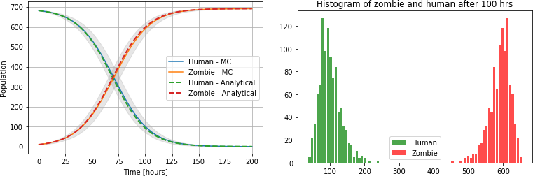
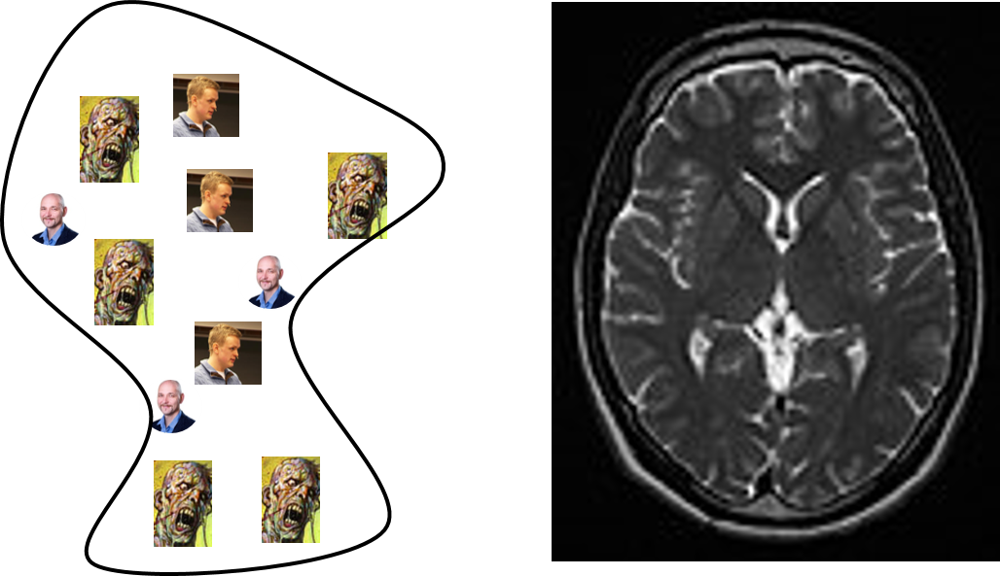

In this project we are going to gain further insight into zombie outbreaks by using Monte Carlo (MC) simulation. Previously, we studied the spreading of diseases with compartment models. Key parameters in this approach are the probability of infection \( \beta \), and the recovery rate \( \alpha \) (kill rate for zombies). Together these two parameters were used to estimate the basic reproduction number \( \mathcal{R}_0 \), which provides a measure of whether the disease will be able to spread in the population.
In project 3, we simply assumed that \( \beta \) declined exponentially as a function of time, eventually putting an end to the disease outbreak. However, we did not explain why such a rapid decline should occur, if at all. For the particular case of the 2014 Ebola virus outbreak in Liberia, researchers actually found that the value of \( \mathcal{R}_0 \) showed no signs of decreasing, even 6 months after the outbreak [1]. Understanding the mechanisms for how to decrease \( \beta \) is therefore important when faced with a potential epidemic.
To make the above statement more concrete, we will in this project model interactions between sick and healthy persons directly. In this way we can test various assumptions, and predict how \( \beta \) and \( \alpha \) might vary as a function of time. To this end, we shall employ random walk [2] [3] simulations. We will start by solving the \( SZ \) model using a Monte Carlo approach. Here, we will not learn anything new regarding zombie-human interactions, because we are solving the same model as in project 3. However, you will discover a completely different way of solving the compartment model, and gain an appreciation for how random fluctuations can affect the final solution.
Next, we model detailed interactions between individuals in the population using a random walk method. Based on the output from these simulations, we predict the parameter \( \beta \) from the compartment model as a function of time, which we subsequently compare with the original \( SZ \) model. We also investigate the impact of various model assumptions regarding how humans learn from surviving zombie encounters.
Finally, we add the possibility that a subset of humans move more slowly than the rest, and explore some scenarios for how this impacts the predicted fate of the humans.
The probability \( p_Z \) of a human (\( S \)) turning into a zombie (\( Z \)) was given as $$ \begin{equation} \tag{3} p_Z=\beta\cdot\Delta t\cdot\frac{Z(t)}{N}\,, \end{equation} $$ where \( N \) is the total number of humans and zombies, and \( \beta \) was put equal to 0.06 \( 1/\text{hr} \).
Part 1.
Figure 1: (left) Evolution of zombie and human as a function of time, \( Z(0)=10 \) (right) A histogram showing the distribution of survivors and zombies at a specific moment in time. (1000 simulations was used)

Part 3.
Figure 2: (left) Zombies and humans confined on an island, (right) MRI signal from a healthy brain.

Several strategies for how to write your code are suggested in the appendix. It is recommended that you first read the appendix, even if you choose to adopt your own strategy.
Also, in this project it is extra important that you include sufficient documentation to your code.
Part 1. (THE MOST DIFFICULT AND COMPREHENSIVE PART) Write a function and/or class that can be used to conduct a single simulation of the random walk algorithm. It is important that you add every option that you will need in later exercises to the function / class! That is, you should not end up in a situation where you have to copy and paste large portions of the code repeatedly.
If you want, you can write your function/class in a separate .py file, and simply import it at the top of your Jupyter notebook.
if i%1000==0: show_walkers(). (Assuming that you have implemented a function called show_walkers())
Part 2. Let \( L=50 \) and \( q=0.9 \). As before, set \( N=682 \), \( Z(0)=1 \). Run the (most basic) model repeatedly; at least \( 10-100 \) times. For each time step, calculate the mean and standard deviation of the number of the humans and zombies in the population.
Create a figure showing the expected time development of the two populations. Make sure to include the computed uncertainty in the plot.
Part 1.
Comment on the results.
Part 2.
Again we will let the probability of being turned into a zombie be \( q=0.9 \). However, suppose that whenever a human is attacked by a zombie and survives, the probability of surviving again at a later stage increases:
q=q*0.5 for that person.For a slightly more hopeful scenario, assume that each time a human survives a zombie encounter, two things happen: a) the probability of surviving is increased as in the last exercise, and b) the human kills the zombie.
For the remainder of the project, we shall divide the human population into two groups: young and old. For easy comparison we shall take the number of people in the two age categories to be the same, that is, equal to \( (N-1)/2=341 \).
Part 1. Young humans and zombies move as before, that is, with equal probability to go in each of the four directions (except when hitting the outskirts of the grid). On the other hand, old humans are slower to react: Suppose that the old humans have the same probability of not moving as they have of moving in one of the four directions (i.e., 20 \%).
For the final part of the project, you are going to suggest your own scenario to explore. You are free to do what ever you like. However, below you will find examples of possible features to test:
Illustrate your findings in a figure, and discuss how your model scenario compare to the previously investigated cases.
When implementing the random walk algorithm, one approach would be to use an
object-oriented programming style.
For example, one could make a class
called Walker, and have subclasses such as Zombie, Human, Infected etc.
However, it can be challenging to decide on the right class hierarchy, as well
as to make the program fast, because it takes more time to access a custom
object than an array.
We will not pursue this approach further here.
An alternative method is to use a set of global arrays to record the state of the system. This option is more computationally efficient, but it requires more of you as a programmer; to code without classes, there is a good chance that your code will be hard to read. Below are some suggestions for how to proceed with this approach. It is important to follow some principles when structuring your code:
_.global in front.np.copy (see further remarks below).
global Walkers_ # (x,y) coordinate of each walker at time T
global N_ # Total population
global nxy_ # Lattice size (a square) nx=ny
Here, Walkers is a 2D array, with a \( (x,y) \) coordinate stored for each walker.
To generate a random position for each walker, we can simply draw one
$x-$coordinate, and one $y-$coordinate:
Walkers_=np.random.randint(nxy_+1,size=(N_,2))
Put, e.g., nxy_=5, and N_=10, print(Walkers_) and inspect the result.
The next issue is how to move the walkers. It is important that they move
at random and only one step, in either the \( x- \) or the $y-$direction.
There are many ways to achieve this. One method is to draw a random integer
\( u \) between 1 and 4. If u==1 move east, if u==2 move north,
if u==3 move west, and if u==4 move south.
Assume for simplicity that we only have five walkers, and that for each of
them we have randomly chosen the following new steps:
next_pos=[[0,1],[1,0],[1,0],[0,1],[-1,0]]
Then we can simply update the position of the walkers as follows:
Walkers_ += next_pos
In our case we need to make sure that none of the walkers move outside the grid. One way of doing this is to store all old (legal) positions
global Walkers_Old_ # old (x,y) position
Walkers_Old_ = Walkers_.copy()
Notice the use of copy() here. If you simply put
Walkers_Old_ = Walkers_, it would not work, because arrays are
mutable
objects in Python. That is, if Walkers_ were assigned directly to Walkers_Old,
both variable names would point to the same underlying object in memory.
However, since the arrays contain objects of an immutable type (int),
one way to avoid this problem is to create a shallow copy with copy().
In yet other applications, a
deepcopy()
operation might be needed.
Next, we find the index of all walkers outside the simulation domain, and put them back to the old position (this is often called a bounce back boundary condition)
# idx is an array of all walkers at illegal positions
Walkers_[idx]=Walkers_Old_[idx]
Walkers_Old_ = Walkers_.copy() # save the new positions
We still have no information about what type (zombie, infected, dead, etc.) the individual walkers are. Below is a suggestion on how to do this:
global State_ # Human = 0, Zombie = 1, Dead = 2, etc.
HUMAN_ = 0
ZOMBIE_ = 1
DEAD_ = 2
State_=np.zeros(N_,dtype=int) # Set all Walkers to Human
State_[0]=ZOMBIE_ # Set one of them to a Zombie
In this way it is easy to add more states, as the simulation is progressing
the State_ array will be updated. At any given time we can find the total
number of humans, zombies, dead etc by using np.bincount(State_),
see documentation.
population = np.bincount(State_) # count number of 0, 1, 2 etc
population[ZOMBIE_] # returns number of zombies
population[HUMAN_] # returns number of humans
A small warning: the above code does not work when, e.g., the humans disappear
completely. This is because np.bincount counts the number of integers.
If there are no zeros, the number 1 will be stored in population[0], and
the code will produce an error.
To fix this, you could add an extra if-clause. Alternatively, you could
use np.count_nonzero instead, e.g.:
num_humans = np.count_nonzero(State_==HUMAN_)
num_zombies = np.count_nonzero(State_==ZOMBIE_)
Yet another approach is to use a (single) class instead of a function to keep track of the state of a given simulation run. For example, the current state of the system can be stored in a set of class instance variables, while the integers flags denoting the status of a walker (human, zombie, etc.) can be class variables. The following code exemplifies the beginning of one such implementation:
class ZombieSimulator:
"""
Class used to model the invasion of zombies in a closed off
area with a 2-dimensional random walk.
"""
# Class variables:
HUMAN_ = 0
ZOMBIE_ = 1
KILLED_ZOMBIE_ = 2
def __init__(self, num_humans0, num_zombies0, *, L=100):
"""
Constructor used to initialize the model.
:param num_humans0: Number of humans at t=0.
:param num_zombies0: Number of zombies at t=0.
:param L: Number of lattice nodes in each dimension.
"""
self.L = L
self.initial_no_humans = num_humans0
self.initial_no_zombies = num_zombies0
self.total_population = num_humans0 + num_zombies0
# Various model options (to do: add more options here!!)
self.infection_probability = 0.9
# Current simulation state:
self.current_time_step = 0
self.pop_status = np.zeros(self.total_population, dtype='int')
self.pos_x = np.zeros(self.total_population, dtype='int')
self.pos_y = np.zeros(self.total_population, dtype='int')
# Prepare for simulation:
self.reset_initial_population_distribution()
def reset_initial_population_distribution(self):
"""
Reset model to time zero, including the initial random
placement of humans and zombies on the lattice.
"""
L = self.L
# TO DO:
# Select initial, random locations for humans and zombies (!)
# Since locations were chosen randomly, we can let the first
# ones in the array be the zombies:
self.pop_status.fill(ZombieSimulator.HUMAN_)
self.pop_status[:self.initial_no_zombies].fill(ZombieSimulator.ZOMBIE_)
# Reset time counter:
self.current_time = 0
def plot_population_distribution(self):
"""
Plot the spatial distribution of humans and zombies
at the current moment in time.
"""
pass # TO DO: implement code here (!)
def simulate_random_walk(self, no_steps, *, print_steps=None):
"""
Perform a single random walk simulation from start to finish.
:param no_steps: Number of time steps to take.
:param print_steps: If not None, a list of time steps at
which to plot the spatial population
distribution.
:return: Dictionary containing the time steps, and the
corresponding solutions (number of humans,
zombies, etc.)
"""
self.reset_initial_population_distribution()
# Allocate arrays in which to store data for the current
# simulation run:
times = np.arange(no_steps+1)
number_of_humans = np.zeros_like(times)
number_of_zombies = np.zeros_like(times)
number_of_killed_zombies = np.zeros_like(times)
number_of_humans[0] = self.initial_no_humans
number_of_zombies[0] = self.initial_no_zombies
# Time loop:
for i, curr_t in enumerate(times):
self.current_time = curr_t
if self.current_time > 0:
# TO DO:
# Perform random walk, and check for collisions.
# Store no. of humans, zombies, etc. at current step.
pass
# Visualize where the humans and zombies are on the grid?
if print_steps is not None and curr_t in print_steps:
self.plot_population_distribution()
solution_dict = {'t': times,
'S': number_of_humans,
'Z': number_of_zombies,
'R': number_of_killed_zombies}
return solution_dict
Of course, the above code only contains the bare bones of the full implementation. To program the interesting parts of the algorithm, you can use many of the ideas that were outlined in Appendix: Object-oriented programming?.
An example showing how you can utilize the above class is also included:
N = 683
lattice_size = 10
simulator = ZombieSimulator(N-1, 1, L=lattice_size)
no_time_steps = 200
no_simulations = 100
sum_of_values_S_ = None
sum_of_squares_S_ = None
sum_of_values_Z_ = None
sum_of_squares_Z_ = None
for i_sim in range(no_simulations):
sol = simulator.simulate_random_walk(no_time_steps)
t_step = sol['t'] # note: this is the same for all runs
S_i = sol['S']
Z_i = sol['Z']
if sum_of_values_S_ is None:
sum_of_values_S_ = S_i
sum_of_values_Z_ = Z_i
sum_of_squares_S_ = S_i**2
sum_of_squares_Z_ = Z_i**2
else:
sum_of_values_S_ += S_i
sum_of_values_Z_ += Z_i
sum_of_squares_S_ += S_i**2
sum_of_squares_Z_ += Z_i**2
# Compute mean and standard deviation:
S_mean_ = sum_of_values_S_/no_simulations
Z_mean_ = sum_of_values_Z_/no_simulations
S_stdev_ = np.sqrt(sum_of_squares_S_/no_simulations-S_mean_**2)
Z_stdev_ = np.sqrt(sum_of_squares_Z_/no_simulations-Z_mean_**2)
# to do: plot results etc..